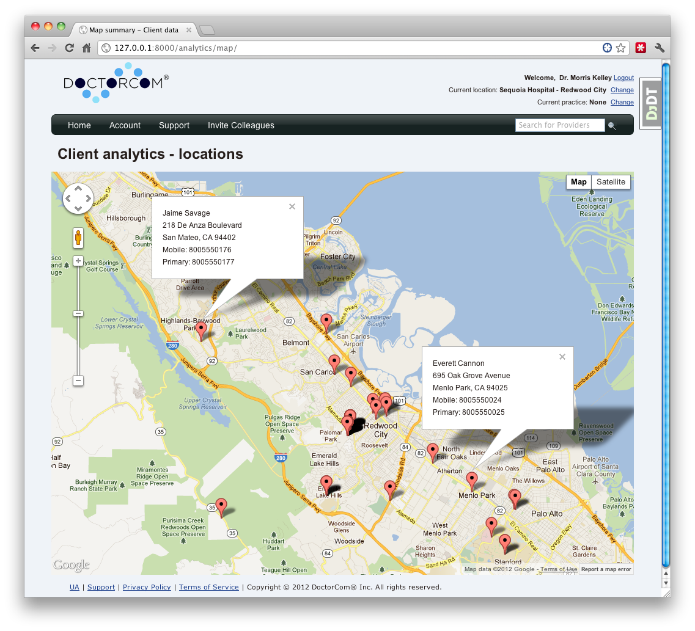
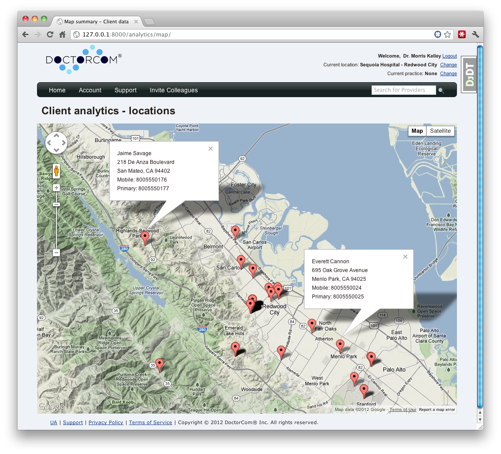
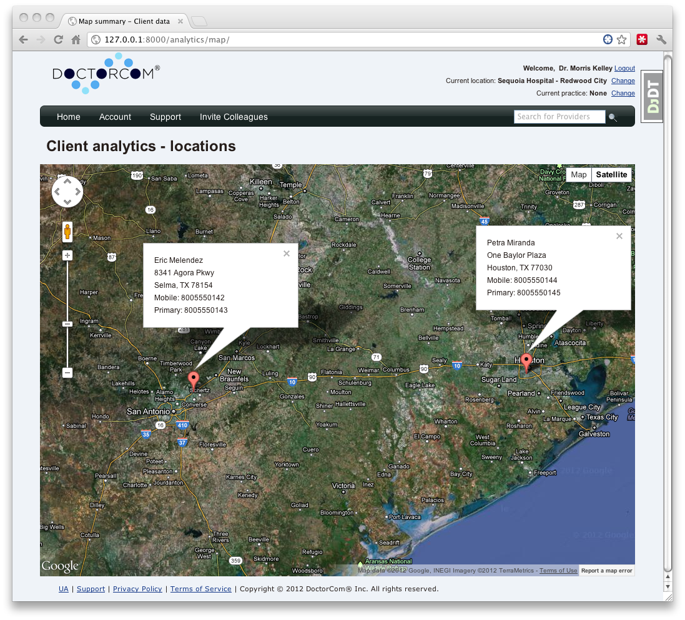

DoctorCom Map Analytics Design Document
Mapping Analytics provides internal functionality using Google Maps API to display client locations, relationships, and filters.
The purpose of this document explains the mapping feature in detail for administrators and sales employees.
Mapping client data provides:
Quick visual summary of client locations.
Relationships between clients on the map, who communicates with who.
The mapping analytics builds on the database of user data we currently store about each client.
The following items are requirements for the DoctorCom mapping feature.
Admin access to DoctorCom website.
Internet access for access to Google Mapping API.
Client web browser must support Javascript 1.5 or later
Optional client web browser must support HTML 5 for current location.
Secure HTTPS communication to server and HIPPA compliant.
All client private messages and emails are encrypted, only client location and relationships are indicated in analytics.
Out of scope:
Future feature requests and bug fixes.
This feature is only available to Administration for internal tracking of our clients.
The analytics mapping design is built upon the Google Maps API and the existing data stored about clients in the database. Google API provides the visual map and plotting of user data (eg. pins) where the current client practices either a hospital, office, or both. Along with the marking for each client on the map a detailed synopsis of each client is displayed when the Administrator clicks on the client data. When hovering the mouse over a client on the map their full name along with title is displayed.
The design relies heavily on Javascript on the front end on the web browser. The backend is handled by Django requests to our MySQL database.
How client locations are plotted on the Google Map. When a client creates or updates their information including address a request goes out to Google to get their address(es) converted into latitude and longitude coordinates. These coordinates are then stored in the database as a cache so that plotting them on the map is fast. When a user updates their profile including and address change their corresponding latitude and longitude values are automatically updated.
How current location is determined. If the client wishes and their web browser supports HTML5 the current location is also plotted. This can be useful when traveling and using a smartphone or tablet type device.
How filtering is done. An administrator may only want to see physicians or physicians of a certain type, or physicians within 100 mile radius of the current location, for example. Filtering is provided by Javascript sending events back to the server with requests on choice of filter.
Relationships are indicated by connecting lines between clients. No personal information is shown or known by administrators. Since connections can make the map cluttered this filter is off by default. When on and zoomed out minimal connecting lines are shown.
TBD.
Implementation is divided into two parts: client side and server side.
Client side implementation is in Javascript and HTML. Before the mapping analytics pages are rendered on the client the server uses in conjunction: Python's Django, MySQL, and templates to generate the Javascript page sent to the client.
Server side implementation is in Python 2.6 using Django as the database interface to MySQL. The web server runs Apache on the Linux platform.
The analytics map page is lightweight in that it knows nothing about the database. All it is given is user name, phone, address, and latitude and longitude coordinates. The queries are all done server side and minimal data is sent over the wire between the client and server.
Testing is performed with real world data. Latitude and longitude coordinates are generated from actual addresses and those coordinates back into addresses. For invalid addresses or if a client did not enter in an address the default location is coordinate 0,0.
TODO: For clients with invalid addresses we should log on the screen a message indicating this warning.
No compatibility issues at this time as long as requirements are met on the client side. Server side dependencies are the responsibility of the developers.
What documentation needs to be updated on the web site? What samples need to be updated? What wiki docs (public or internal) need to be changed. List them here (with JIRAs if broken out).
Warning for clients with invalid or empty addresses instead of pinning them at location 0,0 which is in the equatorial region of Africa.
Different pins for doctors, managers, office staff, hospitals.
Enhance performance by making Django query only return user data displayed on client side.
This section lists future ways this feature/task could be extended even further either to address issues with the current design that could not be addressed within the scope of this release, or just wild ideas that came up while thinking about the feature.
Often, this section will include items defined above in the “Out of scope” section. Items here may refer to JIRAs recording future extensions if they exist.
This section lists alternative design or implementation choices that were considered but rejected. This is helpful during the design process to a reviewer of this design note to know that an approach was at least considered but rejected for some reason and why. It is also helpful at a future date when someone (field, customer, new developer) asks why a feature was implemented in a particular way.
The following screenshots show the different style of maps currently provided. Also clicking on a client's location will bring up their address and important numbers.

Illustration
1: Basic map showing client locations.

Illustration
2: Terrain map showing client locations.

Illustration
3: Satellite map showing client locations.
Last
updated: